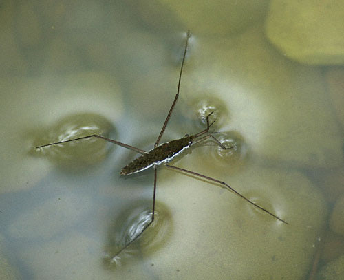
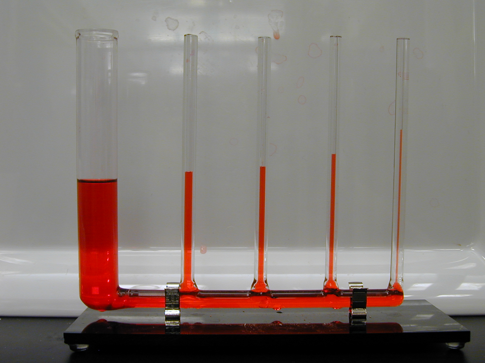
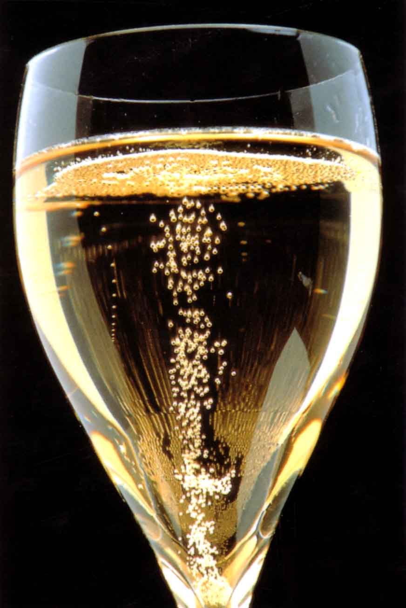
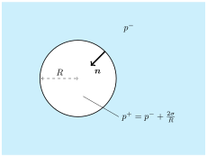
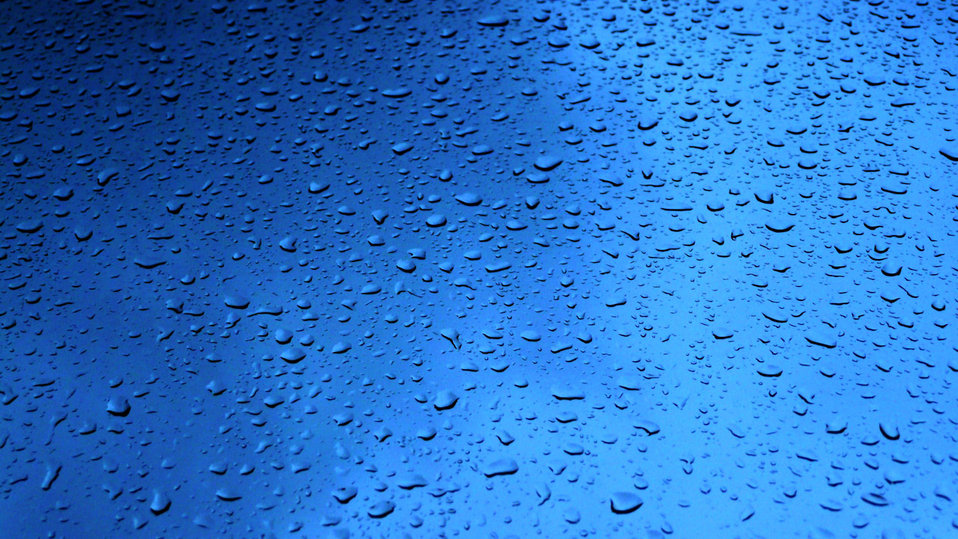
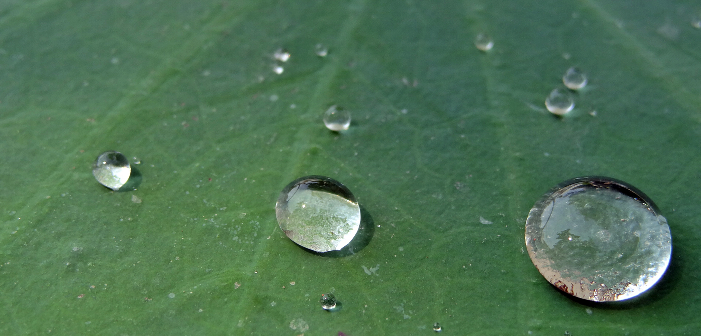
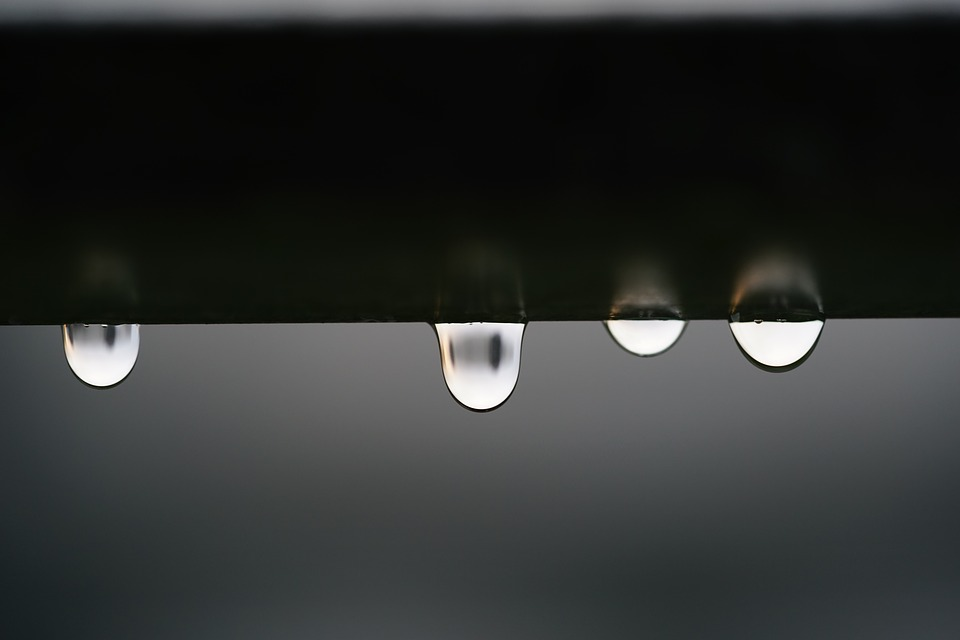
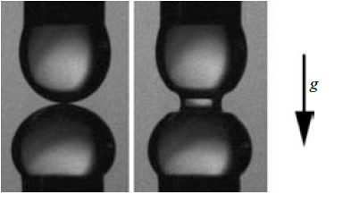
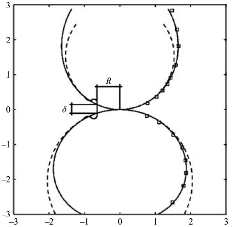

4 Free Surface Flows
Free surfaces exist in a variety of contexts where two phases that are immiscible (i.e. they don’t mix) meet at an interface. Examples include the solidification front of ice in a water drop, or the surface of a pond where water meets air. We will be interested in the latter case, where two immiscible fluids come into contact with each other. Later on, for simplicity, we will focus on the relatively simple situation where one of these fluids is a liquid and the other is a passive gas.
A significant focus in this chapter will be the introduction of boundary conditions that can be applied at the liquid-gas interface. In this case, there is a so-called ‘free boundary’ between the liquid and a fluid above, as occurs on the surface of the sea, on the surface of a gas bubble in a fizzy drink, or on the surface of a raindrop. We need to formulate boundary conditions for these cases which reflect the fact that the surface’s shape must be obtained as a part of the solution (i.e. it is ‘free’), rather than imposed as has previously been the case, e.g. at a solid surface.
4.1 Boundary conditions at a free surface
In the most general case of a free surface between 2 viscous fluids, there are 4 boundary conditions required for 4 unknowns (3 velocity components, and 1 variable representing the free surface shape). These are provided by the kinematic and dynamic boundary conditions.
To set up our problem, we will consider a free surface given in implicit form as f({\boldsymbol{x}},t)=0 with f<0 corresponding to fluid 1 and f>0 corresponding to fluid 2, see Figure 4.1. Variables corresponding to fluid 1 will be denoted with a superscript - whilst those in fluid 2 will be given a +. In this case, the free surface’s unit normal (pointing from fluid 1 into fluid 2) is {\boldsymbol{n}}= \frac{\nabla f}{|\nabla f|}.
Kinematic Boundary Condition
The free surface must move with the velocity of the fluid just adjacent to it, so that fluid particles which begin on the free surface remain there. In other words, the surface ‘follows the fluid’. This means that we have conservation of f along the fluid paths of the surface particles, i.e. \frac{Df}{Dt} = \frac{\partial f}{\partial t} +({\boldsymbol{v}}\cdot \nabla)f =0. As \nabla f = |\nabla f|\,{\boldsymbol{n}}, we can substitute and rearrange, giving \frac{1}{|\nabla f|}\frac{\partial f}{\partial t} +{\boldsymbol{v}}\cdot {\boldsymbol{n}}=0. For steady problems where \frac{\partial f}{\partial t} =0, we therefore find that {\boldsymbol{v}}\cdot {\boldsymbol{n}}=0. This means the surface is impermeable, i.e. the fluid cannot cross it, just as we would expect.
Dynamic Boundary Condition
To obtain a dynamic boundary condition, we apply Newton’s second law to the surface separating the two fluids. As the surface has no inherent mass, the forces acting on the surface from either side must balance. As we know from our discussion in Chapter 2, the forces acting on the surface are expressible as stresses acting.
Of particular interest to us will be the influence of surface tension, which is a property of the surface which appears due to the asymmetry of intermolecular forces acting in the interfacial region (typically of nanometric width). As one goes to smaller length scales, surface forces (\sim L^2) begin to dominate volume forces (\sim L^3). In particular, the surface tension force typically begins to dominate gravity when the length scale goes below the millimetre scale.
Surface tension acts like an elastic membrane sitting on the interface, forcing it to attempt to minimise its area. Crudely, this is because it is energetically favourable for molecules to be in the bulk of the liquid, rather than at its surface. Surface tension is responsible for a whole host of effects ranging from the suspension of small objects (e.g. water striders) through to the breakup of liquid jets (e.g. from a tap in a kitchen), which occurs when the liquid can reduce its surface area by forming a series of spheres (drops) rather than one cylinder (the jet), see Figure 4.2. Problems in which surface tension is a significant factor are known as capillary flows.


We will assume that the surface tension force \sigma per unit length of line is constant along the surface, and is directed tangentially along the surface. Parametrising the surface by coordinates (x,y) so that the surface is z = h(x,y), the tangent vectors in the coordinate directions are {\boldsymbol{t}}_i for i=1,2, where {\boldsymbol{t}}_1 = \frac{1}{\sqrt{1+\big(\frac{\partial h}{\partial x}\big)^2}}\left(1,0,\frac{\partial h}{\partial x}\right)\qquad\text{and}\qquad{\boldsymbol{t}}_2 = \frac{1}{\sqrt{1+\big(\frac{\partial h}{\partial y}\big)^2}}\left(0,1,\frac{\partial h}{\partial y}\right). Consider an approximately rectangular section of surface with side length \delta centred at the point (x_0,y_0,h(x_0,y_0)), as illustrated in Figure 4.3. The net force acting on the top surface is approximately \delta^2{\boldsymbol{S}}^+{\boldsymbol{n}}, and likewise on the bottom surface is \delta^2{\boldsymbol{S}}^-(-{\boldsymbol{n}}). On the edges of the rectangle, surface tension pulls outwards, so that the net forces on the right edge are \sigma \delta{\boldsymbol{t}}_1(x_0+\tfrac12\delta,y_0), with similar expressions for the other edges. Since these forces must balance, summing these contributions up we obtain: \delta^2({\boldsymbol{S}}^+-{\boldsymbol{S}}^-){\boldsymbol{n}}+\sigma\delta\Big({\boldsymbol{t}}_1(x_0+\tfrac12\delta,y_0) -{\boldsymbol{t}}_1(x_0-\tfrac12\delta,y_0)+{\boldsymbol{t}}_2(x_0,y_0+\tfrac12\delta)-{\boldsymbol{t}}_2(x_0,y_0-\tfrac12\delta)\Big)={\boldsymbol{0}}. Taylor expanding the terms in brackets about (x_0,y_0), dividing by \delta^2 and send \delta\to0, we get \left({\boldsymbol{S}}^{+} - {\boldsymbol{S}}^{-}\right){\boldsymbol{n}}=- \sigma\left(\frac{\partial {\boldsymbol{t}}_1}{\partial x} + \frac{\partial {\boldsymbol{t}}_2}{\partial y}\right) \equiv \sigma\kappa {\boldsymbol{n}} on the surface. Here, we have defined the curvature of the interface \kappa using the geometric identity \kappa{\boldsymbol{n}}= -\left(\frac{\partial {\boldsymbol{t}}_1}{\partial x} + \frac{\partial {\boldsymbol{t}}_2}{\partial y}\right), where {\boldsymbol{n}} is the unit normal to the surface.
We can now take components in different directions. In directions tangent to the surface, we find that {\boldsymbol{t}}\cdot\Big(({\boldsymbol{S}}^+-{\boldsymbol{S}}^-){\boldsymbol{n}}\Big) = 0\qquad\text{so}\qquad {\boldsymbol{t}}\cdot({\boldsymbol{S}}^+{\boldsymbol{n}}) = {\boldsymbol{t}}\cdot({\boldsymbol{S}}^-{\boldsymbol{n}}), so the tangential stresses on the interface are continuous across it. On the other hand, the normal stress has a jump caused by the surface tension force with magnitude \sigma\kappa. This jump remains for an inviscid fluid. In this case we recall that the stress tensor takes the form S_{ij} = p\delta_{ij}, and so {\boldsymbol{n}}\cdot({\boldsymbol{S}}{\boldsymbol{n}}) = pn_i\delta_{ij}n_j = p. Working things through, this leads to the single dynamic boundary condition p^{-} - p^{+} = \sigma\kappa on the surface. This is known as the Young-Laplace equation and states that the pressure jump across the interface is caused by the surface tension force. The same equation also applies for the viscous case in a static situation.

4.2 Bubbles
Consider a gas bubble in a liquid, see Figure 4.4. If the bubble is spherical with radius R, then in spherical polar coordinates (r,\theta,\phi) centred in the middle of the bubble, the normal at the interface is {\boldsymbol{n}}= (-1,0,0) (we define the liquid as the - phase, so that the normal points into the gas, the + phase). In this case, it can be shown that the curvature of the spherical surface is \kappa = -\frac{2}{R}. Using our argument above, the pressure just inside the gas bubble p^{+} is related to that in the liquid just outside p^{-} by the relationship p^{-} - p^{+} = - \frac{2\sigma}{R}\qquad\hbox{i.e.}\qquad p^{+} = p^{-} + \frac{2\sigma}{R}. This means the pressure in the gas is increased by 2\sigma/R. This makes intuitive sense: if the surface tension acts to pull inwards on the bubble like an elastic membrane, the pressure will rise in the bubble as it gets squeezed. Smaller bubbles have a larger pressure inside and this is why smaller bubbles are louder when they burst at a liquid’s surface – you can test this in the real world, as champagne is louder than beer!


The Bond number
We have seen that the pressure generated by surface tension is of the order of \sigma/L, where L is a characteristic length scale. This length scale is the approximate radius of curvature of our interface. Therefore, capillary forces (due to surface tension) will be important when \sigma/L is comparable to the pressure generated by gravitational forces, i.e. the hydrostatic pressure \rho g L. To compare the influence of these effects, we consider the dimensionless Bond number, defined to be \mathrm{Bo}= \frac{\rho g L}{\sigma/L} = \frac{\rho g L^2}{\sigma}. When \mathrm{Bo}=1, these effects are in balance, and we can rearrange to show that this occurs when L_{\sigma} = \sqrt{\frac{\sigma}{\rho g}}. The special length scale L_{\sigma} is known as the capillary length. For water in air, where the surface tension is \sigma = 0.07 N/m, we have L_{\sigma}=3 mm. Therefore, for large scale flows, such as sea waves, surface tension has no meaningful effect, but for small scale flows, such as those encountered in micro and nanofluidics, the importance of surface tension far outweighs that of gravity.
The capillary number
In many cases, we are interested in knowing the shape of a liquid drop or bubble whose flow has negligible force in comparison to the surface tension forces. In the latter case, for low Reynolds number flows, where viscous forces dominate inertial ones, looking at the dynamic boundary condition we can see that the viscous force has magnitude \mu U/L whilst the surface tension force is \sigma/L. The ratio of these forces gives the capillary number: \mathrm{Ca}= \frac{\mu U}{\sigma}. When \mathrm{Ca}\ll 1, the flow within the drop has a negligible effect on the free surface, so that the shape can be calculated independently of the flow (this is a huge simplification!).
Young-Laplace Equation
When \mathrm{Ca}\ll 1 in the viscous case, we can neglect viscous effects and again obtain the Young-Laplace equation: p^{-} - p^{+} = \sigma\kappa. To make some progress we can simplify matters further. Let us consider a steady two-dimensional flow in Cartesian coordinates (x,y) with gravity now pointing in the negative y-direction, as shown in Figure 4.5.
Furthermore, let us consider cases in which we can parameterise the free surface in terms of a height function y=h(x), so that f(x,y)=y-h(x). Then some tedious calculations allow us to show that {\boldsymbol{n}}= \frac{(-h',1)}{\big(1+(h')^2\big)^{1/2}}\qquad\hbox{and}\qquad\kappa= -\frac{h''}{\big(1+(h')^2\big)^{3/2}}; here, primes denotes derivatives with respect to x.
If we consider liquid–gas systems in which the pressure in the liquid is hydrostatic, so p^- = p^-_0-\rho g y (where p^-_0 is some constant pressure at y=0) and the gas is dynamically passive so that it experiences negligible variations in hydrostatic pressure due to its lower density, hence p^{+}=p^{+}_0 is constant, then we find - P - \rho g y= \sigma\kappa on the free surface, where P= p^+_0 - p^-_0 is the pressure drop across the interface.
Putting everything together and substituting y=h(x), the Young-Laplace equation becomes: - P - \rho g h = -\frac{\sigma h''}{\big(1+(h')^2\big)^{3/2}} \qquad\hbox{at}\qquad y=h(x,t). One can see immediately that this is a nonlinear, second–order PDE for h and hence we must specify a boundary condition for h (or its derivative) at each end of the free surface. On top of this one either needs to specify the pressure drop P or, more often, the volume of the liquid which can then be used to find P.
4.3 Contact Lines
As we have seen, free surfaces are located where two phases meet each other (e.g. water-air) but these surfaces often come into contact with a third surface (e.g. a solid wall). The three surfaces join along a ‘three phase’ contact line. Common examples of contact lines are liquid–liquid–gas, e.g. an oil drop resting on a water-air interface, and liquid–solid–gas, e.g. a raindrop on a windscreen. Our focus will be on the latter case.
We will be modelling only the liquid and will assume that the solid is rigid, so that is does not deform. A current ‘hot topic’ is contact lines that are formed at soft solids, but this is beyond our scope — see here for a recent review article. As our free surface equations are themselves differential equations, with a \kappa term that becomes \propto h'' in the parameterisation above, typically we need a boundary condition at either end of the free surface where it meets the solid (Figure 4.5). The two most common choices are:
A pinned contact line, where the position of the contact line is prescribed at a fixed coordinate. For example, one may insist that a contact line is at x=R, in which case if the solid is at y=0 in our 2D Cartesian example then the boundary condition would simply be h(R)=0 which ensures the free surface meets the solid at x=R.
A prescribed contact angle - in this case the position of the contact line is found as part of the solution, and instead we impose the angle \theta at which the free surface meets the solid, so in our 2D Cartesian example we would have \frac{\partial h}{\partial x}=\pm \tan\theta at x=\mp R (note R is now an unknown) with the \pm depending on which side of the drop we are considering.
Physically, both of these cases are possible and reasonable, and a typical drop spreading event may include both behaviours. If we were to consider a perfectly smooth homogeneous solid surface, we would expect a drop landing on it to spread with its prescribed contact angle (a significant oversimplification!) until it reaches an equilibrium state. The prescribed contact angle will depend on the liquid-solid-gas combination in question: if the solid is ‘wettable’ (i.e. hydrophilic for water) this angle will be close to zero, so the drop will spread out a lot; this is the case for water on glass. If the angle is high (close to 180^\circ) then the solid is non-wettable (aka hydrophobic) and the drop beads up (e.g. water on a lotus leaf), see Figure 4.6.


The problem is that most ‘real’ solids are not chemically heterogeneous or smooth and the result is that the contact line becomes pinned on these features before it can reach its equilibrium state. This is the reason we usually don’t see spherical cap shapes (the false equilibrium state) when we look at raindrops on typical solids (Figure 4.6, left). In what follows, we will consider these cases separately, but one should keep in mind that in reality both behaviours often occur in the same event.
Example: shape of a liquid drop on a solid
Consider a liquid drop sat on a solid surface. There are a number of different configurations we could think of, but the simplest is to consider a ‘2D drop’ with contact lines ‘pinned’ at x=\pm R so that h(x=\pm R)=0, see Figure 4.7 (one of the Project tasks is to extend this to a cylindrical coordinate system geometry, which is the more practically relevant case). To further simplify matters, we can prescribe P and find the shape (and hence the volume).
In this case, our problem formulation is the Young-Laplace equation - P \mp \rho g h = -\frac{\sigma \frac{d^2 h}{dx^2}}{(1+\left(\frac{dh}{dx}\right)^2)^{3/2}} combined with boundary conditions h(x=\pm R)=0. Our aim is to find the function h. Note that we include \mp g as -g corresponds to a drop on top of a surface perpendicular to the gravitaitonal field and +g corresponds to a drop hanging beneath a surface (see Figure 4.8).
Therefore, to find the drop shape in this case, one solves the Young-Laplace equation, with P prescribed alongside boundary conditions h(x=\pm R)=0. This is the starting point for Project 2.
If we want a physical example, we may consider \rho=1000kg m^{-3}, g=9.8 m s^{-2} and \sigma=0.07N m^{-1} which are values for water. Then a typical drop size (e.g. a raindrop) may be in the range R=1-20mm=1-20\times10^{-3}m. Recalling that \mathrm{Bo}=\frac{\rho g R^2}{\sigma} (where we have used R as a characteristic length scale) will enable us to establish what is dominant out of gravity and capillarity. For \mathrm{Bo}\gg1 we will see pancake shapes, whereas for \mathrm{Bo}\ll1 we will see spherical caps. For the range considered above, we will encounter both large and small \mathrm{Bo} which is why we can observe both pancakes and spherical caps when it rains (see Figure 4.8).

A useful starting point is to see if we can find any analytic solutions in special cases. Two immediately come to mind and both involve neglecting the gravitational field, which we know is valid when \mathrm{Bo}\ll 1. These solutions will provide both tests for our computational codes (which will solve the full problem) as well as initial guesses for iterative solution methods.
Solution for small heights with g=0
The simplest case to consider is when the free surface remains relatively close to the solid so that h'\ll 1. In this case we can linearise our equations (basically ignoring all products of small terms like h, h', h'') to obtain P= \sigma \frac{d^2 h}{dx^2} with solution a parabola h_{lin}=-\frac{P}{2\sigma}\left(R^2-x^2\right). Notably, we see, as expected, that for meaningful solutions we need P<0 as P represents the pressure in the gas minus the pressure in the liquid, which we expect to be higher for a drop, due to surface tension.
General Solution for g=0
Consider now the solution to the nonlinear ODE: P= \frac{\sigma \frac{d^2 h}{dx^2}}{(1+\left(\frac{dh}{dx}\right)^2)^{3/2}}. which is given by a circle (no surprise, as this minimises the length of the free surface for a given volume): x^2 + \left(h+\sqrt{\sigma^2/P^2-R^2}\right)^2 = \frac{\sigma^2}{P^2}.
General Solution for g\neq0
These must be obtained computationally, and are the subject of the Week 4 Workshop. Notably, the solutions for g=0 will provide a benchmark for our code.
4.4 Fluids Coursework Projection Option 2
This project is entitled Shapes of Liquid Drops, and is the second of the two project options you will have in this section of the module. The other was described in Section 3.3.
Project aims
You should write an approximately 10 page report that demonstrates:
Engagement with the literature on capillarity;
Computational results for the shapes of drops in different contexts; and
Validation of code against your own analytic results as well as experimental and/or theoretical results from the published literature.


The Young-Laplace equation in cylindrical polar coordinates
A more realistic drop is obtained if we consider an axisymmetric (nothing depends on \theta) drop in a cylindrical polar coordinate system (r,\theta,z), so that the equivalent height function is given by z=h(r), where h is the height of the free surface and r is the radial coordinate. In this case we need to know the curvature of our free surface, which is given by (feel free to work this out / check): \kappa = -\frac{\frac{d^2 h}{dr^2}}{\left(1+ \left(\frac{dh}{dr}\right)^2\right)^{3/2}} - \frac{\frac{dh}{dr}}{r\left(1+ \left(\frac{dh}{dr}\right)^2\right)^{1/2}}
Project Ideas
The suggestions below are intended to give you ideas of what can be done, but you should feel free to follow your own path if you wish.
A starting point for this project is to compute the static shape of a 2D drop in a gravitational field whose contact line is pinned, as considered within the Week 4 Workshop, where we recall the suggested tasks below.
Solve the linearised Young-Laplace equation and ensure you get the analytic solution in this case.
Extend the code to solve the nonlinear problem via iteration and compare for g=0 to (i) the linearised solution for small heights and (ii) the nonlinear solution in all cases.
Vary P to obtain different drop shapes (for different material parameters, if you like).
Consider if there is a solution for all values of P. If not, what can go wrong and why?
Determine the dimensionless parameter appears from the Young-Laplace equation. How do drop shapes vary as you change this parameter?
Also, recall some of the more challenging suggestions for extending the 2D code:
Can you extend the code to consider prescribing the drop’s volume V (or more precisely its area in 2D) and then finding P as part of the solution? Hint: you will have to introduce an extra unknown into the problem, namely P, and an additional equation, which is that the drop volume is V and will involve an integral over all nodes.
Consider the case of a gas bubble on a solid surface surrounded by an exterior liquid. How do the drop shapes change?
Think about implementing the Newton method, which has superior convergence qualities over Picard iteration (error decreases quadratically, rather than linearly). You may have seen this method for the solution of a single equation for a single variable, i.e. E_1(h_1)=0, where we update the values of h_1 using h_1^{k+1} = h_1^{k} - \left(\frac{dE_1(h_1^{k})}{dh_1}\right)^{-1}E_1(h_1^{k}) and see that the left hand side is the new solution, where the right hand side is evaluated purely at already-existing values. To extend this to a system of equations where we want E_i(h_1,h_2,...,h_n)=0 at every node, we must use h_i^{k+1} = h_i^{k} - J_{ij}^{-1} E_j(h_i^{k}) \qquad J_{ij} = \frac{dE_i(h_i^{k})}{dh_j} and J_{ij}^{-1} is the inverse of J_{ij}. In other words, to find the amount we need to update our solution by \triangle h_i = h_i^{k+1}-h_i^{k} we must solve the linear equations J_{ij}\triangle h_i = - E_j (h_i^{k})
Potential extensions are now described — feel free to follow whatever interests you.
Moving contact lines
- Consider a free (unpinned) contact line, so that R is now an unknown of the problem and a condition is applied on the angle \theta at which the free surface meets the solid (see Figure 4.7) which can be varied (h'(x=\pm R)=\mp \tan\theta). This ‘contact angle’ can vary from \theta=0, where the drop will completely wet the solid with a thin liquid film, through to \theta \approx 180^\circ where there is almost no contact between the drop and solid (these are ‘superhydrophobic surfaces’). Again, you can consider both prescribing P and finding V or vice versa.
Axisymmetric (real) drops
Consider 3D axisymmetric drops so that comparisons can be made to experimental data for drops (or bubbles). In this case, the domain will be from 0\le r\le R, where R is the radial position of the contact line, and at the axis of symmetry (r=0) one has a condition that the free surface is smooth \frac{dh}{dr}=0. Numerically, a crude way to impose this is to enforce that the height of the free surface at the first node h_1 is equal to that at the second node h_1=h_2.
Attempt to derive an analytic solution in this case for g=0. Noting that the profile is a spherical cap may help.
Try to compare your drop shapes to those found in the experimental literature (you may find you need to use a fixed contact angle rather than a fixed drop size). You could look into Bonn et al 2009 for ideas/images (see Reading List) or find your own pictures of static drops.
Fat drops
Parametrise the free surface so that shapes are not restricted to single valued functions of h=h(x) - i.e. one can consider ‘fat drops’ like those in Figure 4.9. To do so, one option is to switch to the parameterisation x=f(y), where the f is now the unknown function (perhaps everywhere, or maybe only in regions where this parameterisation suits better). To utilise this approach one need to know the curvature in this representation, which will be easy to obtain in Cartesian coordinates and in cylindrical polar coordinates where r=f(z) will be given by \kappa = \frac{-\frac{d^2 f}{d z^2}}{\left(1+(\frac{df}{dz})^2\right)^{3/2}} + \frac{1}{f\left(1+(\frac{df}{dz})^2\right)^{1/2}}. One needs to be careful near r=0 with this setup.
An alternative popular approach is to use the arclength coordinate s to find the free surface coordinates as (r(s),z(s)). A common way to achieve this was first described by Adams and Bashforth (see Reading List) and can be found more recently in Thoroddsen et al 2005 and Extrand & Moon 2010 as well as no doubt countless other papers. Note that to use this approach one will need to discretise s rather than x and that the ‘shooting method’ described in papers is similar to treating s as time and using an explicit stepping method. Note also that here you will have more than one equation at each nodes, but the principles we have developed can still be applied to this new setting (i.e. 3 equations at each node means we will have a 3n\times 3n system of equations).
Extract data from Figure~3 in Thoroddsen et al 2005 (e.g. using DataThief) and compare to your results. Or try similar approaches with results in Berry et al 2015 (see Reading List), where the Young-Laplace equation is used to determine the surface tension of hanging liquid drops. Similarly you may look into Extrand & Moon 2010 (again in the Reading List).
Or compare to gas bubble shapes obtained in Simmons et al 2015 in the Reading List below.
Going further
For those feeling very ambitious:
Consider the influence of additional physical effects on drop shapes, for example electric fields (look into the published literature for examples).
Extend your code to consider quasi-static flows, where the free surface is still computed by the Young-Laplace equation but either (i) for a pinned contact line the volume of the drop changes in time, as in Simmons et al 2015 below, or (ii) there is a relation between the contact angle and the speed of the contact line U_c=dR/dt such as dR/dt = (\theta^3(t) - \theta_e^3). Consider the approach of a drop from some initial shape with angle \theta_0=\theta(t=0) towards its equilibrium shape with angle \theta_e (at which point dR/dt=0).
Download and have a play with Surface Evolver, which is a code known to accurately compute equilibrium free surface shapes (note: I have never used it, so you are on your own!). Consider using previous solutions from your own codes as a benchmark and then consider more interesting cases - for example, fully-3D non-axisymmetric cases (e.g. a drop on an inclined plane with a pinned contact line, as you’d see on a car window when it rains).
Reading List
Articles below are just a starting point for your investigations and should not be considered exhaustive:
Pomeau, Y. and Villermaux, E., 2006. Two hundred years of capillarity research. Physics Today, 59(3), p.39.
History of flows with surface tension considering a range of phenomena. Read for an overview of the topic.Bashforth, B., 1883. An attempt to test the theories of capillary action by comparing the theoretical and measured forms of drops of fluid. (with supplement by Adamsg, J.C.).
Early attempt to compute the shapes of static drops on or underneath solid surfaces. Quadrature is used to solve the differential equation and this was incredibly laborious in the pre-computer age! The article can be found here.Thoroddsen, S.T., Takehara, K. and Etoh, T.G., 2005. The coalescence speed of a pendent and a sessile drop. Journal of Fluid Mechanics, 527, pp.85-114.
A paper on the coalescence of liquid drops. Most relevantly, Section 3.1 contains a method for calculating the static shapes of drops using the Young-Laplace equation and Figure~3 shows computed shapes compared to experimental data.Bonn, D., Eggers, J., Indekeu, J., Meunier, J. and Rolley, E., 2009. Wetting and spreading. Reviews of modern physics, 81(2), p.739.
Berry, J.D., Neeson, M.J., Dagastine, R.R., Chan, D.Y. and Tabor, R.F., 2015. Measurement of surface and interfacial tension using pendant drop tensiometry. Journal of colloid and interface science, 454, pp.226-237.
Method for calculating the surface tension by analysing the shape of a drop and comparing it to the Young-Laplace equation’s solutions.Simmons, J.A., Sprittles, J.E. and Shikhmurzaev, Y.D., 2015. The formation of a bubble from a submerged orifice. European Journal of Mechanics-B/Fluids, 53, pp.24-36.
Growth of a gas bubble from a submerged orifice. Here, Section 5.2.1 considers how well the Young-Laplace equation can be used to describe the dynamics (see equation 15 and figure~7), when they are in a quasi-static regime.Extrand, C.W. and Moon, S.I., 2010. Contact Angles of Liquid Drops on Super Hydrophobic Surfaces: Understanding the Role of Flattening of Drops by Gravity. Langmuir, 26, pp.17090-17099.
Article considering how well static drops on superhydrophobic surfaces (those with \theta \to 180^\circ) can be described by the Young-Laplace equation. Includes further explanation of method of Adams and Bashforth.